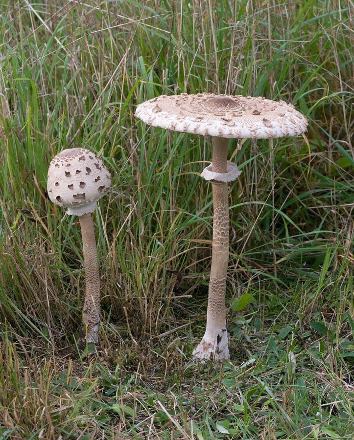

छत्री खुम्बीParasol Mushroom
Macrolepiota procera · Agaricaceae · FNG-0011

- Scientific name
- Macrolepiota procera (Scop.) Singer
- Family
- Agaricaceae
- Hindi
- छत्री खुम्बी
- Status here
- native
- IUCN
- not evaluated
When to look कब देखें
Expected mainly in August, September, October.
छत्री खुम्बी / Parasol Mushroom
Macrolepiota procera (Scop.) Singer — Agaricaceae
छत्री खुम्बी (पैरासोल मशरूम / वाइल्ड पैरासोल / छतरी मशरूम) — पूर्वी उत्तर प्रदेश के घास के मैदानों, जंगलों की सीमाओं, और आर्द्रभूमि के किनारे मानसून के मौसम (August to October) में उगने वाला एक बहुत ही आकर्षक, बड़ा और छतरी जैसा दिखने वाला कवक (gilled mushroom) है। इसकी सबसे बड़ी पहचान इसका विशाल छतरी जैसा सफेद-भूरा टोपा (cap 10–25 cm wide), एक बहुत ही लंबा व पतला तना (stipe), और तने पर पाया जाने वाला एक हिलने-डुलने वाला दोहरा छल्ला (moveable double ring / annulus) है। इसके तने की सतह पर सांप की केंचुल जैसी चित्तीदार बनावट (snakeskin-like pattern) होती है। इसके टोपे के केंद्र में एक उठा हुआ गहरा भूरा बिंदु (central nipple / boss) होता है और चारों ओर भूरे रंग के रेशेदार तराजू (scales) फैले होते हैं। यह एक स्वादिष्ट खाने योग्य मशरूम है, लेकिन इसे पहचानते समय अत्यधिक सावधानी की आवश्यकता होती है क्योंकि यह बेहद जहरीले सफेद अमानिता (Amanita) मशरूम से बहुत मिलता-जुलता है।
Quick Identification त्वरित पहचान
| Feature | Description |
|---|---|
| Cap shape | Egg-shaped when young, expanding flat like a large umbrella (10–25 cm wide) with a raised dark brown center (nipple) |
| Cap surface | Cream-white background, covered in shaggy, concentric pale brown scales |
| Stipe (Stem) | Very tall (15–35 cm), thin (10–20 mm), hollow, with a bulbous base and a distinct grey-brown snakeskin pattern |
| Annulus (Ring) | A thick, leathery, double-edged white-grey ring on the stem that can be easily slid up and down with fingers |
| Gills | Free from the stem, crowded, broad, cream-white, turning soft and pale brown in age |
Field tip: Look in wet grassy orchards after heavy August rains. Search for tall, pale umbrellas rising high above the grass. Check the stem; it should have a dark, snake-like pattern and a loose white ring that you can slide. The cap center is brown and raised.
Morphology आकारिकी
Biometrics (typical measurements of mature fruit bodies in the northern Indian plains):
| Measurement | Range |
|---|---|
| Cap diameter | 10–25 cm |
| Stipe height | 15–35 cm |
| Stipe thickness | 10–20 mm |
| Ring width | 15–25 mm |
| Spore size | 15–20 × 10–12 µm |
Cap (Pileus): Large, fleshy, dry, with a distinct central bump (umbo). The margin is fringed with white threads.
Stipe: Fibrous, tough, easily snapping off from the cap. The snakeskin pattern is formed by the outer dark skin cracking as the stem stretches.
Gills (Lamellae): Free from the stem, leaving a clear gap around it.
Spore Print: Pure white print.
Ecology and Substrate पारिस्थितिकी और उपस्तर
- Decomposer: Saprotrophic fungus, growing on rich humus, decaying organic matter, and compost in soil under trees.
- Substrate: Found growing in moist soil among decaying leaves or tall grass roots in pastures.
- Edibility safety caveat:
> [!CAUTION]
> Although Macrolepiota procera is a prized edible mushroom, extreme caution is mandatory. It can be easily confused with deadly poisonous white mushrooms like the destroying angel or death cap (Amanita species) or toxic green-spored parasols (Chlorophyllum molybdites). Never consume any wild mushroom unless its identity is verified by a professional mycologist. Always perform a spore print test.
Associated Species / Interactions संबंधित प्रजातियाँ
- Soil Invertebrates: Slugs and snails feed heavily on the mature gills.
- Mycoflora: Frequently grows in the same grassy meadows as fairy ring mushrooms.
Expected Locally स्थानीय रूप से अपेक्षित
Not a field record. Written from published accounts for eastern Uttar Pradesh. No confirmed local sighting yet — if you have seen it, that is what the atlas needs.
अभी तक स्थानीय पुष्टि नहीं। यह विवरण प्रकाशित स्रोतों से है, किसी अवलोकन से नहीं।
A notable wild mushroom growing in mango groves and grassy orchards across the Basti district during late monsoons, regularly recorded in the Harraiya and Vikramjot blocks. Local villagers recognize the "chhatri" but generally avoid collecting it due to fear of poisonous wild mushrooms, though some traditional herbalists identify and harvest it for cooking after heavy rain cycles.
Distribution वितरण
Global range: Widespread across temperate and subtropical zones of Europe, North America, North Africa, and Asia.
In India: Widespread in grasslands and forest margins of all plains and lower Himalayan tracts.
In Uttar Pradesh: Distributed state-wide in all fertile plains.
In Basti district / eastern UP: Found in old groves and moist grassy areas.
Research Questions शोध प्रश्न
Anyone can investigate these | कोई भी इन प्रश्नों की जाँच कर सकता है
- How many days does a Parasol cap take to expand from a closed "drumstick" shape to a flat umbrella? — Record cap growth daily.
- Does the snakeskin pattern on the stem become more visible as the height of the stipe increases? — Monitor stem skin cracking.
- What is the number of Parasol mushrooms found in a shaded orchard versus a hot, open pasture? — Compare counts in different light levels.
- How many hours does a cut cap take to release a complete white spore print on a sheet of dark paper? — Track spore drop rates.
- Does the population of Parasol mushrooms increase in pastures where cow dung compost is added to the grass in Basti? / क्या बस्ती के उन चरागाहों में छत्री खुम्बी की संख्या बढ़ जाती है जहाँ घास में गोबर की खाद डाली जाती है? — Compare counts in composted and control grass plots.
Similar Species मिलती-जुलती प्रजातियाँ
| Species | How to tell apart | comparison |
|---|---|---|
| Poisonous Parasol (Chlorophyllum molybdites) | Spore print is green (not white); gills turn green in age; stipe lacks the snakeskin pattern; toxic | हरा-बीजाणु छतरी — जहरीला, हरा बीजाणु प्रिंट |
| Deadly Amanita (Amanita verna) | Stipe has a fixed ring (not moveable); base of stipe sits inside a bag-like cup (volva); cap is smooth without scales | सफेद अमानिता — अत्यंत जहरीला, तने के नीचे थैला |
| Shaggy Mane (Coprinus comatus) | Cylindrical cap; gills dissolve into black ink when mature; stipe is smooth white | स्याही खुम्बी — काले रंग की स्याही में घुलने वाली |
Field rule: Large umbrella-like mushroom with cream scales, a central brown nipple, a tall stipe with a snakeskin pattern, a free-moving double ring, and a white spore print, is the Parasol Mushroom.
Taxonomy & Classification वर्गीकरण
Original description. Giovanni Antonio Scopoli described this species as Agaricus procerus in 1772 in his Flora Carniolica (Vol. 2, p. 418). Rolf Singer placed it in the genus Macrolepiota in 1948. The genus name Macrolepiota is derived from the Greek makros (large) and the genus Lepiota (scale). The specific name procera is Latin for tall or slender.
Subspecies. Monotypic — no subspecies are currently recognised in the main index.
Family and order placement. Placed in the order Agaricales, family Agaricaceae (parasol and button mushroom family), genus Macrolepiota.
Phylogenetic notes. Macrolepiota procera belongs to the lepiotoid clade within Agaricaceae, characterized by free gills, a sliding annulus, and dextrinoid, metachromic spores that indicate its specialized evolution within grass-decomposing systems.
IUCN status rationale. Not evaluated (NE) by the IUCN Red List. It has a secure, widespread, and stable population globally.
Photo Gallery फोटो गैलरी
References संदर्भ
- Singer, R. (1948). New and Interesting Species of Basidiomycetes. II. Papers of the Michigan Academy of Science, Arts and Letters, Vol. 32, p. 141. [original generic transfer]
- Scopoli, G. A. (1772). Flora Carniolica. Vienna, Vol. 2, p. 418. [original description as Agaricus procerus]
- Bilgrami, K. S., Jamaluddin, S. & Rizwi, M. A. (1979). Fungi of India. Today and Tomorrow's Printers & Publishers, New Delhi.
- Vellinga, E. C. (2001). Studies in Lepiotaceae: The Genus Macrolepiota. Mycotaxon.
- World Flora Online (2024). Macrolepiota procera details.
- GBIF Occurrence Data — Macrolepiota procera, India (2010–2025).
Source file: species/fungi/mushrooms/parasol_mushroom.md